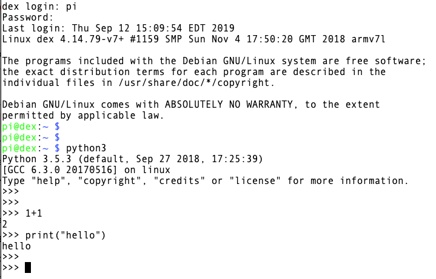
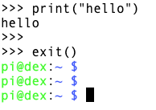
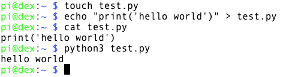
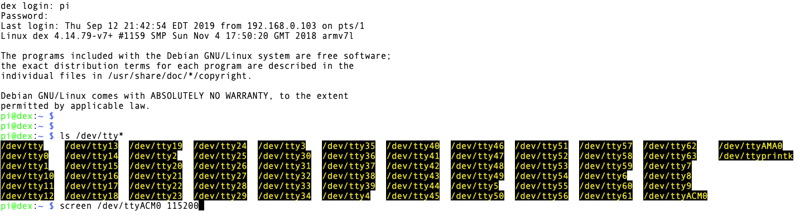
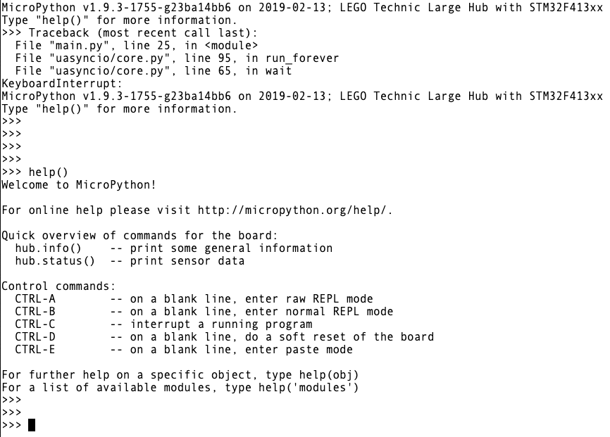
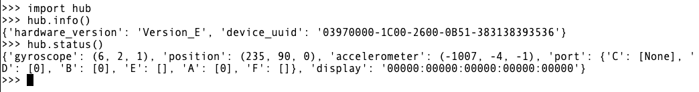

You can use the Terminal as a Python Interpreter or to access the REPL Interface within SPIKE Prime.
Launch the Terminal and then log in using the username pi and the password robots1234.
To access the Python Interpreter type python3 at the main prompt. Then you can enter Python commands into the interpreter.

Type exit() in order to exit the Python Interpreter and return back to the default Raspberry Pi/Linux command line.

From the default Raspberry Pi/Linux command line, you can issue various Linux
commands (e.g. Common
Linux Commands and 25 basic commands)
as well as execute Python code (stored in a .py file).

(That example above is overly complex. The important part: if you have a file called test.py that contains Python code,
and you want to execute that code, issue the command python3 test.py to run it.)
The REPL for MicroPython is a "Read Evaluate Print Loop" interactive prompt that lets you issue commands to the hardware (specifically here, the SPIKE Prime hardware).
To access the REPL Interpreter, you first need to establish a serial connection to the hardware. To do this, find the name of your SPIKE Prime hardware (probably
/dev/ttyACM0) by typing ls /dev/tty* and looking for the one that starts with ACM (e.g. ACM0, ACM1, etc)
Once you have identified the name of your SPIKE Prime Hardware, connect to it using the command screen /dev/ttyAMC0 115200 (and specifying your particular hardware)

Doing so will enter into the REPL mode. Hit "control-C" in order to interrupt the currently running program
and get to the live/active REPL prompt. Once there, you can issue teh help() command to see a variety of helpful commands and functions.

Type import hub to import the hub module, which will then allow you to inquire about the hub's general info and current status.

Note the following Control commands:
For full list of available MicroPython commands for SPIKE Prime, see SPIKE Prime MicroPython Commands.
For more information on all the MicroPython commands, see the official MicroPython Documentation.